Here we provide a collection of use-examples showing a range of
queries that we think a typical use of the biodiversity infrastructure
may want to perform. sbdi4r2 is a wrapper for
galah customized to interact with the SDBI implementation.
galah is an R interface to biodiversity data hosted by the
‘living atlases’; a set of organisations that share a common codebase,
and act as nodes of the Global Biodiversity Information Facility (GBIF). These organisations collate and
store observations of individual life forms, using the ‘Darwin Core’ data standard.
The sbdi4r2 package is primarily for accessing data. It includes some filter functions that allow you to filter prior to download. It also includes some simple summary functions, and some functions for some simple data exploration. The examples also show you how you can use the data by exploring and analyzing with help of other R packages.
Please get in contact with us if you have questions regarding the use of the sbdi4r2 package. For deeper
Using sbdi4r2
Let’s assume you have already installed the package as shown in the main site.
Load the sbdi4r2 package:
library(sbdi4r2)
library(galah)
sbdi_config(email = "aleruete@gmail.com")
#> ✔ verbose
#> ✔ run_checks
#> ✖ send_email
#> ℹ directory: C:\Users\ALEJAN~1.AZU\AppData\Local\Temp\RtmpQnGcxp
#> • username [Not Provided]
#> • email aleruete@gmail.com
#> • password [Not Provided]
#> • api_key [Not Provided]
#> • download_reason_id 4
#> • Swedish Biodiversity Data Infrastructure (SBDI), SwedenThen, check that we have some additional packages that we’ll use in the examples, and install them if necessary.
to_install <- c( "dplyr", "ggplot2", "lubridate", "leaflet","maps", "mapdata",
"sf", "tidyr", "vegan")
to_install <- to_install[!sapply(to_install, requireNamespace, quietly = TRUE)]
if (length(to_install) > 0)
install.packages(to_install, repos = "http://cran.us.r-project.org")NOT WORKING
Example 1: Name searching and taxonomic trees
We want to look at the taxonomy of titmice, but we don’t know what the correct scientific name is, so let’s search for it:
sx <- sbdi_call() |>
sbdi_identify("parus") |>
atlas_species()
sxThe whole family
sx <- sbdi_call() |>
sbdi_identify("paridae") |>
atlas_species()Filter to restrict to species and not hybrids
sx <- sx |>
filter(Genus != "") ## restrict to species and not hybridsExample 2: Get some data, filter the search, get quality assertions, plotting data on a map and save data
Download occurrence data for the “Sommarlånke” and view top of the data table:
focal_spp <- search_taxa("Callitriche cophocarpa")
## or equally valid
focal_spp <- search_taxa("sommarlånke")
focal_spp$taxon_concept_id
#> [1] "8236752"
x <- sbdi_call() |>
sbdi_identify("Callitriche cophocarpa") |>
atlas_occurrences()
#> Request for 614 occurrences placed in queue
#> Current queue length: 1
#> --
#> Downloading
table(x$dataResourceName)
#>
#> Herbarium GB, University of Gothenburg
#> 2
#> Lund University Biological Museum - Botanical collection (LD)
#> 384
#> National Wetland Inventory (NV)
#> 15
#> Oskarshamn herbarium (OHN)
#> 211
#> SHARK - Regional marine environmental monitoring and monitoring projects of Epibenthos in Sweden since 1994
#> 2You can also search for a set of species simultaneously (only scientific names so far)…
taxa <- c("Callitriche", "Anarrhinum")
x <- sbdi_call() |>
sbdi_identify(taxa) |>
atlas_occurrences()
#> ---
table(x$dataResourceName)
#>
#> Artportalen (Swedish Species Observation System)
#> 21330
#> Botany (UPS)
#> 487
#> Herbarium GB, University of Gothenburg
#> 17
#> Lund University Biological Museum - Botanical collection (LD)
#> 2156
#> National Wetland Inventory (NV)
#> 89
#> Oskarshamn herbarium (OHN)
#> 776
#> Phanerogamic Botanical Collections (S)
#> 2628
#> SHARK - National marine environmental monitoring of Epibenthos in Sweden since 1992
#> 56
#> SHARK - Regional marine environmental monitoring and monitoring projects of Epibenthos in Sweden since 1994
#> 2309
#> The Bergius Herbarium
#> 1Search filters
There are different data sources. Let’s assume you only need to see data from one source, e.g. Lund University Biological Museum - Botanical collection (LD):
taxa <- "Callitriche cophocarpa"
xf <- sbdi_call() |>
sbdi_identify(taxa) |>
filter(dataResourceName == "Lund University Biological Museum - Botanical collection (LD)") |>
atlas_occurrences()
#> --
table(xf$dataResourceName)
#>
#> Lund University Biological Museum - Botanical collection (LD)
#> 384change to show_all(fields)
show_all(fields)
show_all(fields) |>
filter(grepl("cl", id)) |>
as.data.frame()In the same way you can use the spatial layers that are available to spatially search for the indexed observations.
show_all(fields) |>
filter(description == "LA-regioner") |>
as.data.frame()
show_all(fields) |>
filter(description == "Län") |>
as.data.frame()
xf <- sbdi_call() |>
sbdi_identify(taxa) |>
filter("cl10097" == "Uppsala") |>
atlas_occurrences()Note that this is fundamentally different than filtering by
county=Uppsala as this will search for the text
Uppsala in the field county, rather than
spatially matching the observations.
Other filters on queries
Any search could be filtered by any indexed field (a.k.a. column or variable). You can find which are the variables that are indexed with the command `c These filter strings require SOLR syntax, see SOLR For example, let’s filter observations with coordinate uncertainty smaller than or equal to 100 m.
xf <- sbdi_call() |>
sbdi_identify(taxa) |>
filter(coordinateUncertaintyInMeters <= 100) |>
atlas_occurrences()
#> -One could search for observations in specific years:
x2yr <- sbdi_call() |>
sbdi_identify(taxa) |>
filter(year == 2010 | year == 2020) |>
atlas_occurrences()
nrow(x2yr)
#> [1] 2In the same way, one could search for observations between two years:
xf <- sbdi_call() |>
sbdi_identify(taxa) |>
filter(year >= 2010, year <= 2020) |>
atlas_occurrences()
#> -
library(lubridate)
hist(year(xf$eventDate), xlab = "Year", main = "")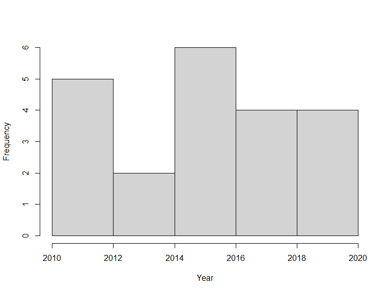
Likewise, search conditions can be accumulated and will be treated as AND conditions:
xf <- sbdi_call() |>
sbdi_identify(taxa) |>
filter(year >= 2010, year <= 2020,
month >= 6, month <= 8) |>
atlas_occurrences()
#> -
hist(month(xf$eventDate), xlab = "Month", main = "")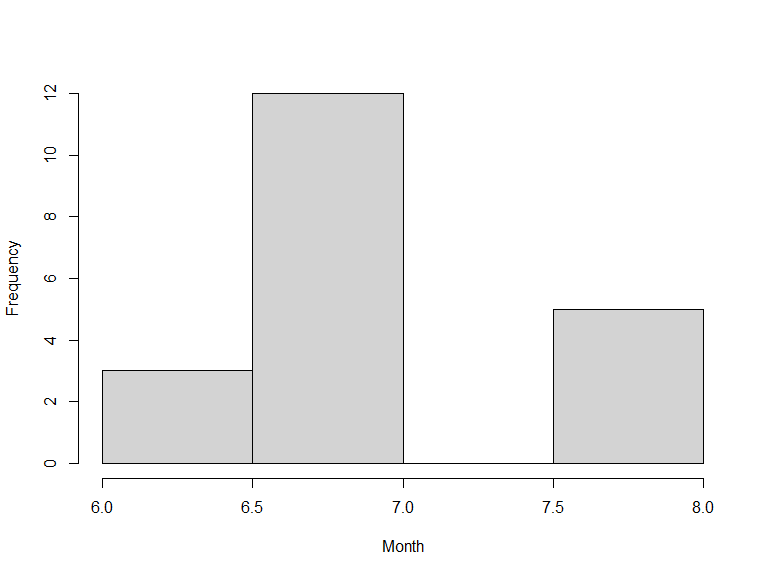
or, occurrences could be filtered by the basis of record (that is how was the observation recorded):
xbor <- sbdi_call() |>
sbdi_identify(taxa) |>
filter(basisOfRecord == "PreservedSpecimen") |>
select(basisOfRecord) |>
atlas_occurrences()
#> --
unique(xbor$basisOfRecord)
#> [1] "PRESERVED_SPECIMEN"Quality assertions
Data quality assertions are a suite of fields that are the result of a set of tests performed on data. We continue using the data for the Blunt-fruited Water-starwort and get a summary of the data quality assertions,
You can see a list of all record issues using
show_all(assertions) and see what is considered as fatal
quality issues, that is category = “Error”.
show_all(assertions)
#> # A tibble: 114 × 4
#> id description category type
#> <chr> <chr> <chr> <chr>
#> 1 AMBIGUOUS_COLLECTION Ambiguous collection Warning asse…
#> 2 AMBIGUOUS_INSTITUTION Ambiguous institution Warning asse…
#> 3 BASIS_OF_RECORD_INVALID Basis of record badly form… Warning asse…
#> 4 biosecurityIssue Biosecurity issue Error asse…
#> 5 COLLECTION_MATCH_FUZZY Collection match fuzzy Warning asse…
#> 6 COLLECTION_MATCH_NONE Collection not matched Warning asse…
#> 7 CONTINENT_COUNTRY_MISMATCH Continent country mismatch Warning asse…
#> 8 CONTINENT_DERIVED_FROM_COORDINATES Continent derived from coo… Warning asse…
#> 9 CONTINENT_INVALID Continent invalid Warning asse…
#> 10 COORDINATE_INVALID Coordinate invalid Warning asse…
#> # ℹ 104 more rows
assertFatal <- show_all(assertions) |>
filter(category == "Error")
search_all(assertions, "longitude")
#> # A tibble: 2 × 4
#> id description category type
#> <chr> <chr> <chr> <chr>
#> 1 PRESUMED_NEGATED_LONGITUDE Longitude is negated Warning asse…
#> 2 COORDINATE_REPROJECTION_FAILED Decimal latitude/longitude conv… Warning asse…
xassert <- sbdi_call() |>
sbdi_identify(taxa) |>
select(assertFatal$id) |>
atlas_occurrences()
#> Request for 614 occurrences placed in queue
#> Current queue length: 1
#> --
#> Downloading
colSums(xassert[,assertFatal$id])
#> biosecurityIssue detectedOutlier
#> 0 0
#> habitatMismatch identificationIncorrect
#> 0 0
#> INTERPRETATION_ERROR SENSITIVITY_REPORT_INVALID
#> 0 0
#> SENSITIVITY_REPORT_NOT_LOADABLE taxonomicIssue
#> 0 0
#> temporalIssue UNRECOGNISED_COLLECTION_CODE
#> 0 0
#> UNRECOGNISED_INSTITUTION_CODE userAssertionOther
#> 0 0
assertWarning <- show_all(assertions) |>
filter(category == "Warning")
xassert <- sbdi_call() |>
sbdi_identify(taxa) |>
select(assertWarning$id) |>
atlas_occurrences()
#> Request for 614 occurrences placed in queue
#> Current queue length: 1
#> --
#> Downloading
colSums(xassert[,assertWarning$id])
#> AMBIGUOUS_COLLECTION
#> 0
#> AMBIGUOUS_INSTITUTION
#> 0
#> BASIS_OF_RECORD_INVALID
#> 0
#> COLLECTION_MATCH_FUZZY
#> 0
#> COLLECTION_MATCH_NONE
#> 0
#> CONTINENT_COUNTRY_MISMATCH
#> 0
#> CONTINENT_DERIVED_FROM_COORDINATES
#> 0
#> CONTINENT_INVALID
#> 0
#> COORDINATE_INVALID
#> 0
#> COORDINATE_OUT_OF_RANGE
#> 0
#> COORDINATE_PRECISION_INVALID
#> 122
#> COORDINATE_REPROJECTION_FAILED
#> 0
#> COORDINATE_REPROJECTION_SUSPICIOUS
#> 0
#> COORDINATE_UNCERTAINTY_METERS_INVALID
#> 404
#> COORDINATES_CENTRE_OF_COUNTRY
#> 0
#> COORDINATES_CENTRE_OF_STATEPROVINCE
#> 0
#> COUNTRY_COORDINATE_MISMATCH
#> 1
#> COUNTRY_DERIVED_FROM_COORDINATES
#> 2
#> COUNTRY_INVALID
#> 0
#> COUNTRY_MISMATCH
#> 0
#> DEPTH_MIN_MAX_SWAPPED
#> 0
#> DEPTH_NON_NUMERIC
#> 0
#> DEPTH_NOT_METRIC
#> 0
#> DEPTH_UNLIKELY
#> 0
#> ELEVATION_MIN_MAX_SWAPPED
#> 0
#> ELEVATION_NON_NUMERIC
#> 0
#> ELEVATION_NOT_METRIC
#> 0
#> ELEVATION_UNLIKELY
#> 0
#> FIRST_OF_CENTURY
#> 0
#> FIRST_OF_MONTH
#> 19
#> FIRST_OF_YEAR
#> 0
#> FOOTPRINT_SRS_INVALID
#> 0
#> FOOTPRINT_WKT_INVALID
#> 0
#> FOOTPRINT_WKT_MISMATCH
#> 0
#> GEODETIC_DATUM_INVALID
#> 0
#> GEOREFERENCE_POST_OCCURRENCE
#> 0
#> GEOREFERENCED_DATE_INVALID
#> 0
#> GEOREFERENCED_DATE_UNLIKELY
#> 0
#> geospatialIssue
#> 0
#> ID_PRE_OCCURRENCE
#> 0
#> IDENTIFIED_DATE_INVALID
#> 0
#> IDENTIFIED_DATE_UNLIKELY
#> 0
#> INDIVIDUAL_COUNT_CONFLICTS_WITH_OCCURRENCE_STATUS
#> 0
#> INDIVIDUAL_COUNT_INVALID
#> 0
#> INSTITUTION_COLLECTION_MISMATCH
#> 0
#> INSTITUTION_MATCH_FUZZY
#> 0
#> INSTITUTION_MATCH_NONE
#> 0
#> INVALID_SCIENTIFIC_NAME
#> 0
#> LOCATION_NOT_SUPPLIED
#> 13
#> MISSING_COLLECTION_DATE
#> 23
#> MISSING_GEODETICDATUM
#> 599
#> MISSING_GEOREFERENCE_DATE
#> 614
#> MISSING_GEOREFERENCEDBY
#> 614
#> MISSING_GEOREFERENCEPROTOCOL
#> 614
#> MISSING_GEOREFERENCESOURCES
#> 614
#> MISSING_GEOREFERENCEVERIFICATIONSTATUS
#> 0
#> MISSING_TAXONRANK
#> 612
#> MODIFIED_DATE_INVALID
#> 0
#> MODIFIED_DATE_UNLIKELY
#> 0
#> MULTIMEDIA_DATE_INVALID
#> 0
#> MULTIMEDIA_URI_INVALID
#> 0
#> NAME_NOT_SUPPLIED
#> 0
#> OCCURRENCE_STATUS_INFERRED_FROM_BASIS_OF_RECORD
#> 2
#> OCCURRENCE_STATUS_INFERRED_FROM_INDIVIDUAL_COUNT
#> 384
#> OCCURRENCE_STATUS_UNPARSABLE
#> 0
#> PRESUMED_NEGATED_LATITUDE
#> 0
#> PRESUMED_NEGATED_LONGITUDE
#> 0
#> PRESUMED_SWAPPED_COORDINATE
#> 0
#> RECORDED_DATE_INVALID
#> 2
#> RECORDED_DATE_MISMATCH
#> 0
#> RECORDED_DATE_UNLIKELY
#> 0
#> REFERENCES_URI_INVALID
#> 0
#> STATE_COORDINATE_MISMATCH
#> 335
#> TAXON_AFFINITY_SPECIES
#> 0
#> TAXON_CONFER_SPECIES
#> 0
#> TAXON_DEFAULT_MATCH
#> 0
#> TAXON_ERROR
#> 0
#> TAXON_EXCLUDED
#> 0
#> TAXON_EXCLUDED_ASSOCIATED
#> 0
#> TAXON_HOMONYM
#> 0
#> TAXON_INDETERMINATE_SPECIES
#> 0
#> TAXON_MATCH_AGGREGATE
#> 0
#> TAXON_MATCH_FUZZY
#> 0
#> TAXON_MATCH_HIGHERRANK
#> 0
#> TAXON_MATCH_NONE
#> 0
#> TAXON_MISAPPLIED
#> 0
#> TAXON_MISAPPLIED_MATCHED
#> 0
#> TAXON_PARENT_CHILD_SYNONYM
#> 0
#> TAXON_QUESTION_SPECIES
#> 0
#> TAXON_SCOPE_MISMATCH
#> 0
#> TAXON_SPECIES_PLURAL
#> 0
#> TYPE_STATUS_INVALID
#> 0
#> UNCERTAINTY_IN_PRECISION
#> 122
#> UNCERTAINTY_NOT_SPECIFIED
#> 0
#> UNKNOWN_COUNTRY_NAME
#> 0
#> UNKNOWN_KINGDOM
#> 0
#> userDuplicateRecord
#> 0
#> ZERO_COORDINATE
#> 0Plotting data on a map
xf <- sbdi_call() |>
sbdi_identify(taxa) |>
atlas_occurrences()
#> --
## note this should ideally be states
data("swe_wgs84", package = "sbdi4r2", envir = environment())
plot(swe_wgs84[["Border"]]$geometry, col = "grey", border = NA)
points(xf$decimalLongitude, xf$decimalLatitude, pch = 19, col = "black")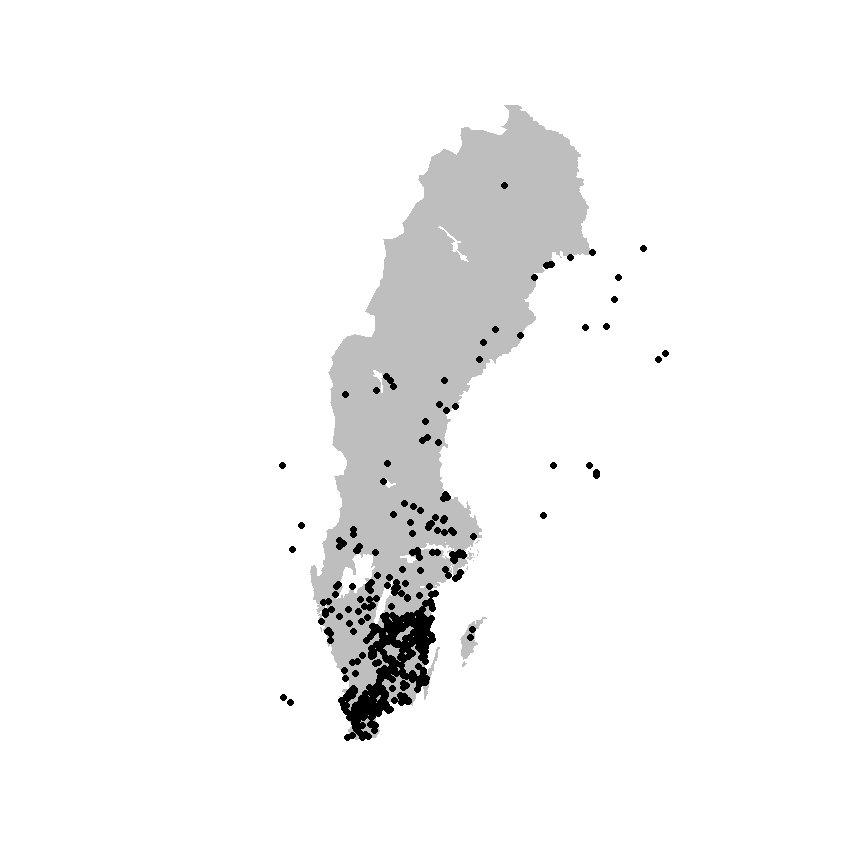
There are many other ways of producing spatial plots in R.
library(sf)
#> Linking to GEOS 3.11.2, GDAL 3.7.2, PROJ 9.3.0; sf_use_s2() is TRUE
xf_sf <- xf |>
filter(!is.na(decimalLatitude),
!is.na(decimalLongitude)) |>
st_as_sf(coords = c("decimalLongitude", "decimalLatitude"), crs = 4326)
plot(swe_wgs84[["Border"]]$geometry, col = "grey", border = NA)
plot(xf_sf$geometry, pch = 19, add = TRUE)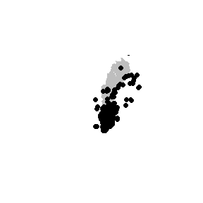
The leaflet package provides a simple method of
producing browser-based maps with panning, zooming, and background
layers:
library(leaflet)
## make a link to the web page for each occurrence
popup_link <- paste0("<a href=\"https://records.biodiversitydata.se/occurrences/",
xf_sf$recordID,"\">Link to occurrence record</a>")
## blank map, with imagery background
m <- leaflet() |>
addProviderTiles("Esri.WorldImagery") |>
addCircleMarkers(data = xf_sf ,
radius = 2, fillOpacity = .5, opacity = 1,
popup = popup_link)
mSave data
# save as data.frame
Callitriche <- as.data.frame(xf)
# simplyfy data frame
calli <- data.frame(Callitriche$scientificName,
Callitriche$decimalLatitude,
Callitriche$decimalLongitude)
# simplify column names
colnames(calli) <- c("species","latitude","longitude")
# remove rows with missing values (NAs)
calli <- na.omit(calli)
# save new dataframe
write.csv(calli, "Callitriche.csv")Example 3: Summarise occurrences over a defined grid
Now, following with the data downloaded in the previous example, we want to summarise occurrences over a defined grid instead of plotting every observation point. First we need to overlay the observations with the grid. In this case, the standard Swedish grids at 50, 25, 10 and 5 km are provided as data (with Coordinate Reference System = WGS84, EPSG:4326).
library(sf)
# load some shapes over Sweden
# Political borders
data("swe_wgs84", package = "sbdi4r2", envir = environment())
# A standard 50km grid
data("Sweden_Grid_50km_Wgs84", package = "sbdi4r2", envir = environment())
grid <- Sweden_Grid_50km_Wgs84
# grid <- st_transform(grid, crs = st_crs(3006))
nObs <- nrow(xf_sf)
## overlay the data with the grid
listGrid <- st_intersects(grid, xf_sf)
ObsInGridList <- list()
for (i in seq(length(listGrid))) {
if (length(listGrid[[i]]) == 0) {
ObsInGridList[[i]] <- NA
} else {
ObsInGridList[[i]] <- st_drop_geometry(xf_sf[listGrid[[i]],])
}
}
wNonEmpty <- which( unlist(lapply(ObsInGridList, function(x) !all(is.na(x)))) )
if (length(wNonEmpty) == 0) message("Observations don't overlap any grid cell.")
## check nObs
sum(unlist(lapply(ObsInGridList, nrow))) == nObs
#> [1] FALSE
length(ObsInGridList) == nrow(grid)
#> [1] TRUEThe result ObsInGridList is a list object
with a subset of the data on each grid.
Summarise
Now summarise occurrences within grid cells:
## apply a summary over the grid
nCells <- length(ObsInGridList)
res <- data.frame("nObs" = as.numeric(rep(NA, nCells)),
"nYears" = as.numeric(rep(NA, nCells)),
row.names = row.names(grid),
stringsAsFactors = FALSE)
cols2use <- c("scientificName", "eventDate")
dataRes <- lapply(ObsInGridList[wNonEmpty], function(x){
x <- x[,cols2use]
x$year <- year(x$eventDate)
colnames(x) <- c("scientificName", "year")
return(c("nObs" = nrow(x),
"nYears" = length(unique(x[,"year"]))
))
})
dataRes <- as.data.frame(dplyr::bind_rows(dataRes, .id = "id"))
res[wNonEmpty,] <- dataRes[,-1]
res$nObs <- as.numeric(res$nObs)
resSf <- st_as_sf(cbind(res, st_geometry(grid)) )
rownames(resSf) <- grid$idPlotting data on a map
Finally plot the grid summary as a map:
palBW <- leaflet::colorNumeric(palette = c("white", "navyblue"),
domain = c(0, max(resSf$nObs, na.rm = TRUE)),
na.color = "transparent")
oldpar <- par()
par(mar = c(1,1,0,0))
plot(resSf$geometry, col = palBW(resSf$nObs), border = NA)
plot(swe_wgs84$Border, border = 1, lwd = 1, add = T)
legend("bottomleft",
legend = round(seq(0, max(resSf$nObs, na.rm = TRUE), length.out = 5)),
col = palBW(seq(0, max(resSf$nObs, na.rm = TRUE), length.out = 5)),
title = "Number of \nobservations", pch = 15, bty = "n")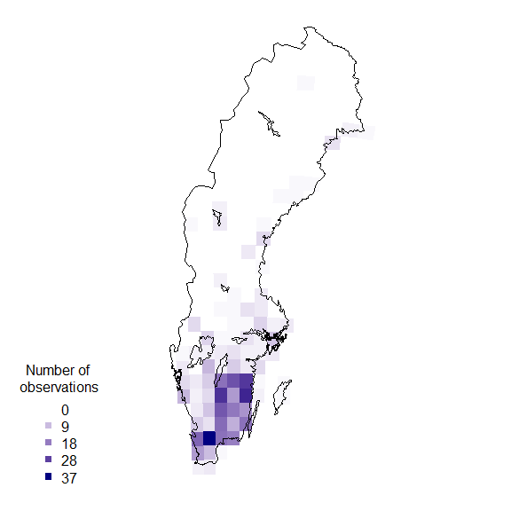
suppressWarnings(par(oldpar))Other polygons
Any other set of polygons could also be used to summarise, for example, the counties.
counties <- swe_wgs84$Counties
obs <- st_transform(xf_sf, crs = st_crs(counties))
## overlay the data with the counties
listGrid <- st_intersects(counties, obs)
ObsInCountyList <- list()
for (i in seq(length(listGrid))) {
if (length(listGrid[[i]]) == 0) {
ObsInCountyList[[i]] <- NA
} else {
ObsInCountyList[[i]] <- st_drop_geometry(xf_sf[listGrid[[i]],])
}
}
wNonEmpty <- which( unlist(lapply(ObsInCountyList, function(x) !all(is.na(x)))) )
if (length(wNonEmpty) == 0) message("Observations don't overlap any grid cell.")
## check nObs
sum(unlist(lapply(ObsInCountyList, nrow))) == nObs # some observations are not in the counties territory
#> [1] FALSE
length(ObsInCountyList) == nrow(counties)
#> [1] TRUE
## apply a summary over the grid
nCells <- length(ObsInCountyList)
res <- data.frame("nObs" = as.numeric(rep(NA, nCells)),
"nYears" = as.numeric(rep(NA, nCells)),
stringsAsFactors = FALSE)
cols2use <- c("scientificName", "eventDate")
dataRes <- lapply(ObsInCountyList[wNonEmpty], function(x){
x <- x[,cols2use]
x$year <- year(x$eventDate)
colnames(x) <- c("scientificName", "year")
return(c("nObs" = nrow(x),
"nYears" = length(unique(x[,"year"]))
))
})
dataRes <- as.data.frame(dplyr::bind_rows(dataRes, .id = "id"))
res[wNonEmpty,] <- dataRes[,-1]
res$nObs <- as.numeric(res$nObs)
resSf <- st_as_sf(cbind(res, st_geometry(counties)))
rownames(resSf) <- counties$LnNamnand again plotting as a map:
palBW <- leaflet::colorNumeric(c("white", "navyblue"),
c(0, max(resSf$nObs, na.rm = TRUE)),
na.color = "transparent")
oldpar <- par()
par(mar = c(1,1,0,0))
plot(resSf$geometry, col = palBW(resSf$nObs), border = NA)
plot(swe_wgs84$Border, border = 1, lwd = 1, add = T)
text(st_coordinates(st_centroid(counties)),
labels = as.character(counties$LnNamn), font = 2, cex = .5 )
legend("bottomleft",
legend = round(seq(0, max(resSf$nObs, na.rm = TRUE), length.out = 5)),
col = palBW(seq(0, max(resSf$nObs, na.rm = TRUE), length.out = 5)),
title = "Number of \nobservations", pch = 15, bty = "n")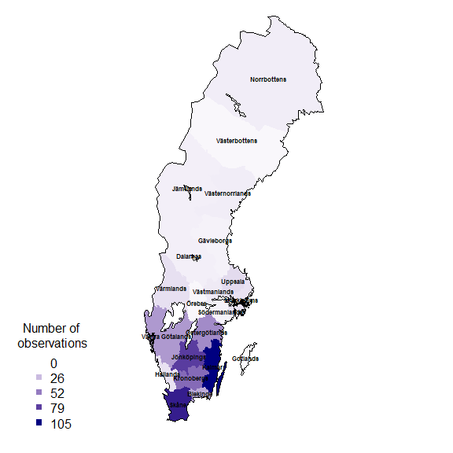
suppressWarnings(par(oldpar))Add the county name to each observation
countiesLab <- as.character(counties$LnNamn)
## Add a column to the obs data.frame to hold the id of the overlapped polygon,
## in this case, Län (county) and plot which observation didn't fall with any
## territory.
obs$county <- countiesLab[as.integer(st_intersects(obs, counties))]
oldpar <- par()
par(mar = c(1,1,0,0))
plot(counties$geometry, border = 1, lwd = 1)
plot(obs$geometry[which(is.na(obs$county))],
pch = 19, cex = .5, col = "red", add = T)
suppressWarnings(par(oldpar))It is clear from this image that there are observations outside the territorial extent of the county but that may be within the counties water bodies or coastal areas.
Example 4: Area search and report. What listed species exist in a given area?
This will only work when you set a valid filepath, and will create an
object of class SpatialPolygon. You could instead use the data we kindly
provided in this package data("swe").
shape <- swe$Municipalities
## extract just the Municipality of Örebro
shape <- shape[shape$KnNamn == "Örebro", ]We could create the WKT string using the rgeos
library:
wkt <- shape |>
st_transform(crs = st_crs(4326)) |>
st_geometry() |>
st_as_text()Unfortunately, in this instance this gives a WKT string that is too long and won’t be accepted by the web service. Also, the shapefile we just got is projected in the coordinate system SWEREF99 TM, and the web service only accepts coordinates in a geodesic coordinate system WGS84. Instead, let’s construct the WKT string directly, which gives us a little more control over its format:
shape <- st_transform(shape,
crs = st_crs(4326))
shape <- st_union(shape)
## extract the convex hull of the polygon to reduce the length of the WKT string
shape_ch <- st_convex_hull(shape)
# cast it as MULTIPOLYGON as this is what SBDIs API need
# NOTE: as of today, the SBDI APIs will only work properly if the polygon is
# submitted as a MULTIPOLYGON
shape_ch <- st_cast(shape_ch, to = "POLYGON")
# create WKT string
wkt <- st_as_text(shape_ch)Now extract the species list in this polygon:
sbdi_call() |>
sbdi_identify("amphibia") |>
sbdi_geolocate(wkt) |>
filter(taxonRank == "species") |>
atlas_occurrences() |>
group_by(taxonConceptID, scientificName) |>
reframe(count = n())#> [1] "could not find function \"reframe\""Example 5: Community composition and turnover
Define our area of interest as a transect running westwards from the Stockholm region, and download the occurrences of legumes (Fabaceae; a large family of flowering plants) in this area:
## A rough polygon around the Mällardalen
wkt <- "POLYGON((14.94 58.88, 14.94 59.69, 18.92 59.69, 18.92 58.88, 14.94 58.88))"
## define some environmental layers of interest [see sbdi_fields(fields_type = "occurrence")]
# el10009 WorldClim Mean Temperature of Warmest Quarter https://spatial.biodiversitydata.se/ws/layers/view/more/worldclim_bio_10
# el10011 WorldClim Annual Precipitation https://spatial.biodiversitydata.se/ws/layers/view/more/worldclim_bio_12
env_layers <- c("el10009","el10011")
## Download the data. We use the `occurrences()` function, adding environmental
## data via the 'extra' parameter.
x <- sbdi_call() |>
sbdi_identify("Fabaceae") |>
sbdi_geolocate(wkt) |>
filter(taxonRank == "species") |>
select(recordID, scientificName, taxonConceptID, taxonRank,
decimalLatitude, decimalLongitude,
eventDate, occurrenceStatus, all_of(env_layers)) |>
atlas_occurrences()Convert this to a sites-by-species data.frame:
library(tidyverse)
xgridded <- x |>
## discard genus- and higher-level records
filter(taxonRank %in%
c("species", "subspecies", "variety", "form", "cultivar")) |>
mutate(longitude = round(decimalLongitude * 5)/5,
latitude = round(decimalLatitude * 5)/5,
el10009 = el10009 /10) %>%
## average environmental vars within each bin
group_by(longitude,latitude) %>%
mutate(annPrec = mean(el10011, na.rm=TRUE),
meanTempWarmQuart = mean(el10009, na.rm=TRUE)) |>
## subset to vars of interest
select(longitude, latitude, scientificName, annPrec, meanTempWarmQuart) |>
## take one row per cell per species (presence)
distinct() |>
## calculate species richness
mutate(richness = n()) |>
## convert to wide format (sites by species)
mutate(present = 1) |>
do(spread(data =., key = scientificName, value = present, fill = 0)) |>
ungroup()
## where a species was not present, it will have NA: convert these to 0
sppcols <- setdiff(names(xgridded),
c("longitude", "latitude",
"annPrec",
"meanTempWarmQuart",
"richness"))
xgridded <- xgridded |>
mutate_at(sppcols, function(z) ifelse(is.na(z), 0, z))
saveRDS(xgridded, file = "vignette_fabaceae.rds")The end result:
xgridded[, 1:10]
#> # A tibble: 100 × 10
#> longitude latitude annPrec meanTempWarmQuart richness `Anthyllis vulneraria`
#> <dbl> <dbl> <dbl> <dbl> <int> <dbl>
#> 1 15 58.8 632. 15.2 18 1
#> 2 15 59 630. 15.4 35 1
#> 3 15 59.2 642. 15.5 31 1
#> 4 15 59.4 658. 15.3 32 1
#> 5 15 59.6 682. 15.2 30 1
#> 6 15.2 58.8 631. 15.2 21 1
#> 7 15.2 59 627. 15.4 34 1
#> 8 15.2 59.2 628. 15.7 56 1
#> 9 15.2 59.4 644. 15.7 32 1
#> 10 15.2 59.6 669. 15.4 28 1
#> # ℹ 90 more rows
#> # ℹ 4 more variables: `Astragalus glycyphyllos` <dbl>,
#> # `Lathyrus linifolius` <dbl>, `Lathyrus pratensis` <dbl>,
#> # `Lathyrus sylvestris` <dbl>Now we can start to examine the patterns in the data. Let’s plot richness as a function of longitude:
library(ggplot2)
ggplot(xgridded, aes(longitude, richness)) +
labs(x = "Longitud (º)",
y = "Species richness") +
lims(y = c(0,100)) +
geom_point() +
theme_bw()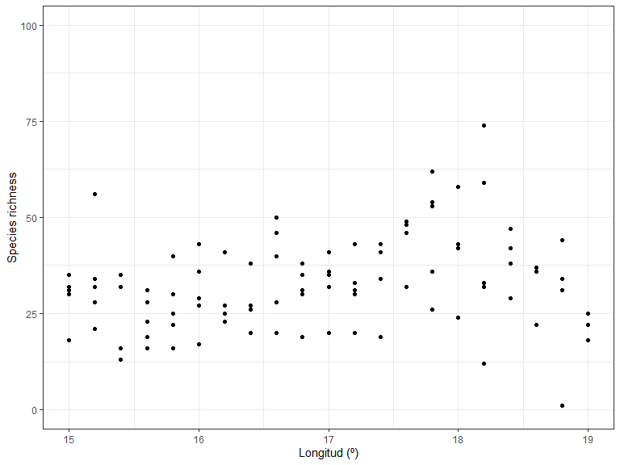
Species richness as a function of environment:
ggplot(xgridded, aes(meanTempWarmQuart, annPrec,
colour = richness)) +
labs(x = "Mean temperature of warmest quarter (ºC)" ,
y = "Annual precipitation (mm)",
colour = "Species \nrichness") +
scale_colour_distiller(palette = "Spectral") +
geom_point(size=3) +
theme_bw()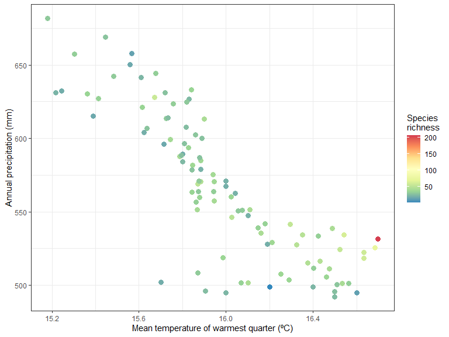
It seem like there is higher species richness in hottest areas.
How does the community composition change along the transect? Use clustering:
library(vegan)
## Bray-Curtis dissimilarity
D <- vegdist(xgridded[, sppcols], "bray")
## UPGMA clustering
cl <- hclust(D, method = "ave")
## plot the dendrogram
plot(cl)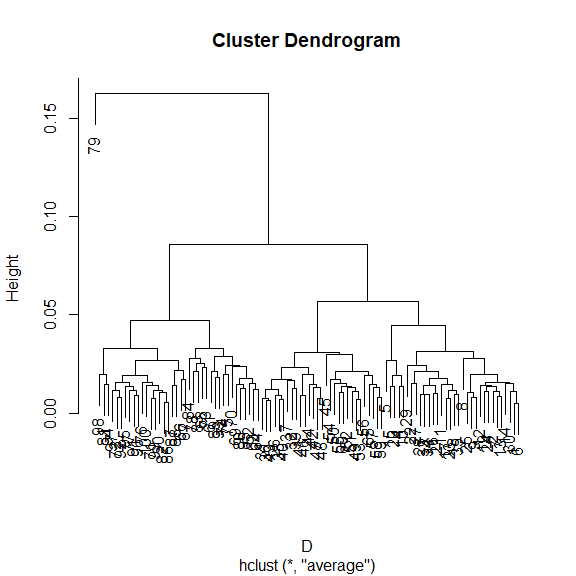
## extract group labels at the 5-group level
grp <- cutree(cl, 5)
## coalesce small (outlier) groups into a single catch-all group
sing <- which(table(grp) < 5)
# grp[grp %in% sing] <- 6 ## put these in a new combined group
grp <- sapply(grp, function(z)which(unique(grp) == z)) ## renumber groups
xgridded$grp <- as.factor(grp)
## plot
## colours for clusters
thiscol <- c("#1f77b4", "#ff7f0e", "#2ca02c", "#d62728", "#9467bd", "#8c564b",
"#e377c2", "#7f7f7f", "#bcbd22", "#17becf")
ggplot(xgridded, aes(longitude, latitude, colour = grp)) +
labs(x = "Longitude", y = "Latitude", colour = "Group") +
geom_point(size = 3) +
scale_colour_manual(values = thiscol) +
theme_bw()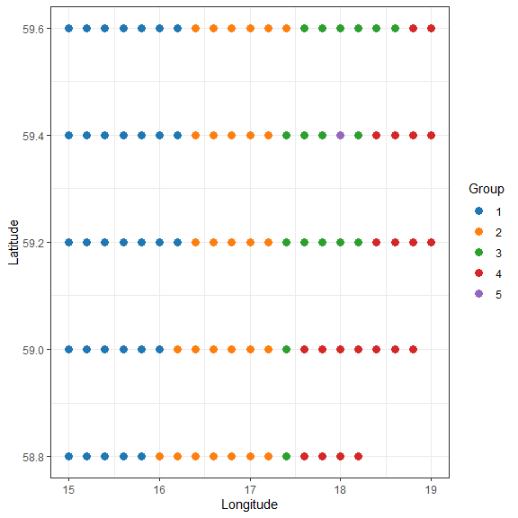
## or a slightly nicer map plot
library(maps)
library(mapdata)
oldpar <- par()
par(mar = c(1,1,0,0))
map("worldHires", "Sweden",
xlim = c(14.5, 20), ylim = c(58.8, 59.95),
col = "gray90", fill = TRUE)
with(xgridded, points(longitude, latitude,
pch = 21, col = thiscol[grp],
bg = thiscol[grp], cex = 0.75))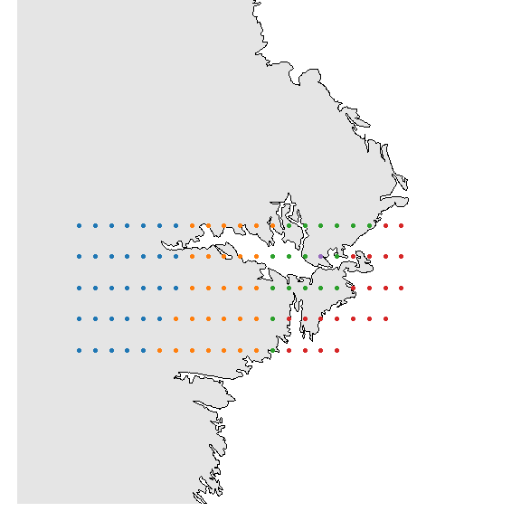
suppressWarnings(par(oldpar))